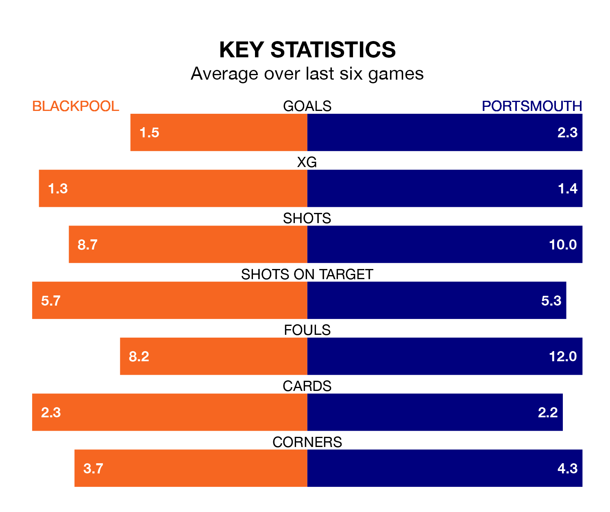

Portsmouth come to Bloomfield Road to play Blackpool on Saturday in excellent form, having collected 16 points from their last six games.
The visitors have won five and drawn one of their last six fixtures, while the Seasiders have three wins and a draw.
Portsmouth are top of the table after 36 games, of which they have won 22 and drawn 10, earning 76 points.
Blackpool are seven places behind Pompey in eighth, with 16 wins and eight draws putting them on 56 points.
With Will Norris between the sticks, the visitors can rely on one of the league's safest pair of hands. He has kept 16 clean sheets in his 36 appearances this season, and no 'keeper has prevented the opposition scoring more often in EFL League One.
In the Seasiders' net, Daniel Grimshaw has 12 clean sheets in 35 games. He has conceded a goal every 83 minutes, 40% more often than the 116 minutes between goals for Norris.
With 60 goals in 36 games so far this season, Portsmouth are scoring more than average in the league with 1.7 goals per game. And they are conceding fewer than average, letting in 31 goals at a rate of 0.9 per game.
The home side are also above average scorers, with 1.6 goals per game, compared to a league average of 1.3. They have conceded 1.1 goals per game.
In the last 10 years, Blackpool and Portsmouth have played each other on 10 occasions. Blackpool won six of them, Portsmouth three, and they drew once.
On average, the Seasiders scored 1.6 goals and Pompey 0.9 in those matches.
Their last meeting was on November 25, when Blackpool won 4-0 away.
Blackpool's last match was on March 2, a 2-0 win against Shrewsbury Town, with Hayden Coulson and Karamoko Dembele getting the goals for the Seasiders.
Portsmouth beat Oxford United 2-1 last time out, also on March 2, with Callum Lang and Christain Saydee on the scoresheet.
Saturday's match will be refereed by Oliver Yates, who has taken charge of 13 EFL League One games so far this season, issuing one red card and booking 59 players. He has awarded four penalties.
The last Blackpool game Yates refereed was a 4-0 away win against Portsmouth on November 25. His last Portsmouth match was their 4-0 loss at home against Blackpool on November 25.
Updated: 09:34 (UTC), 08/03/24